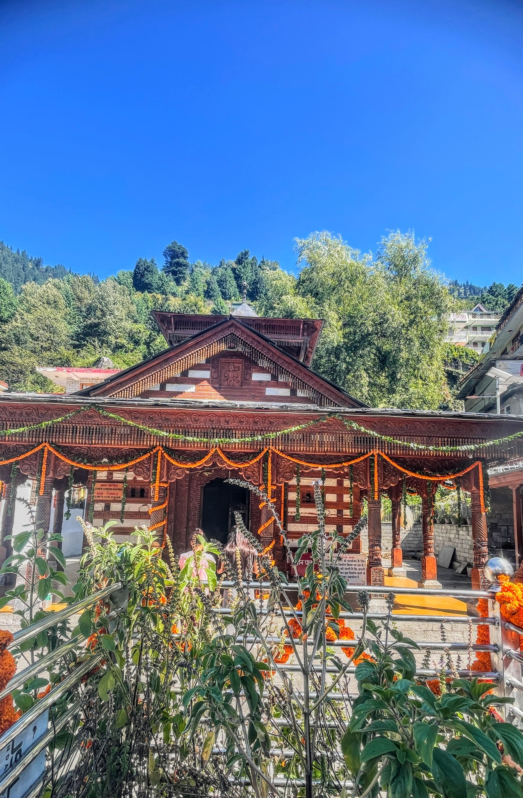
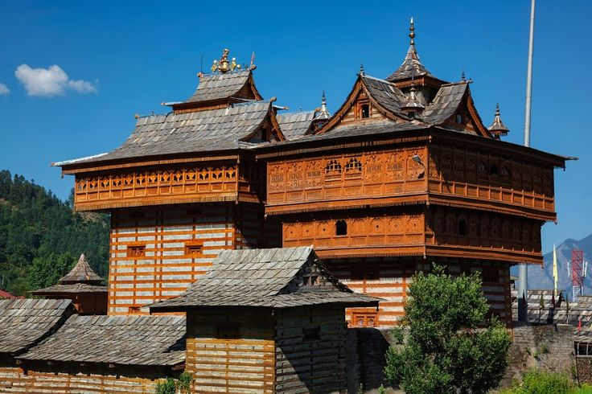
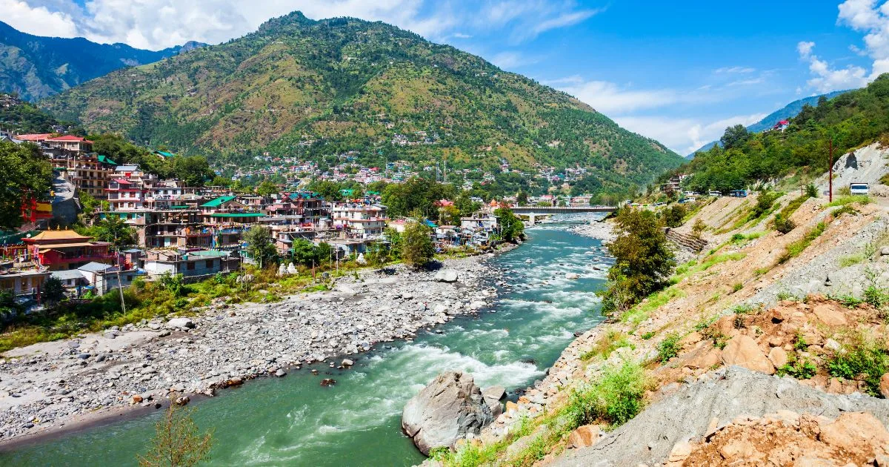
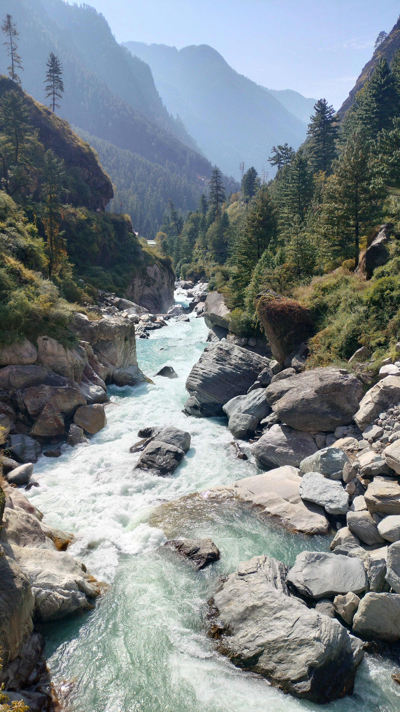
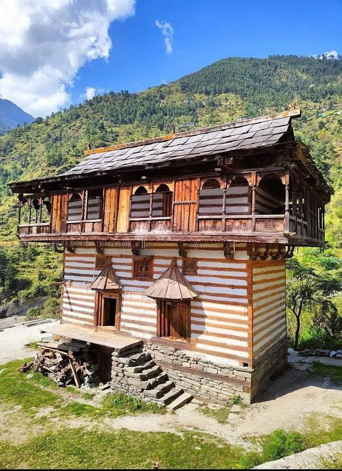
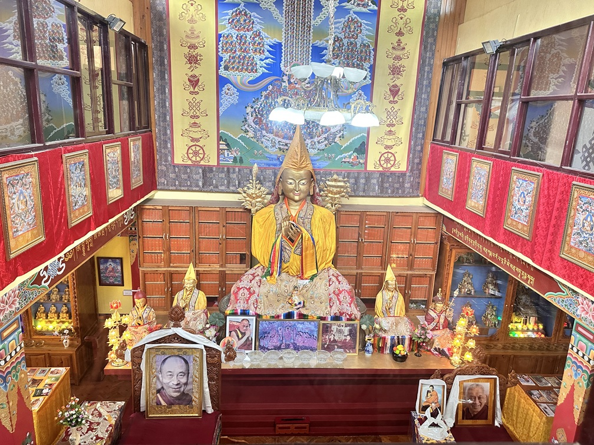
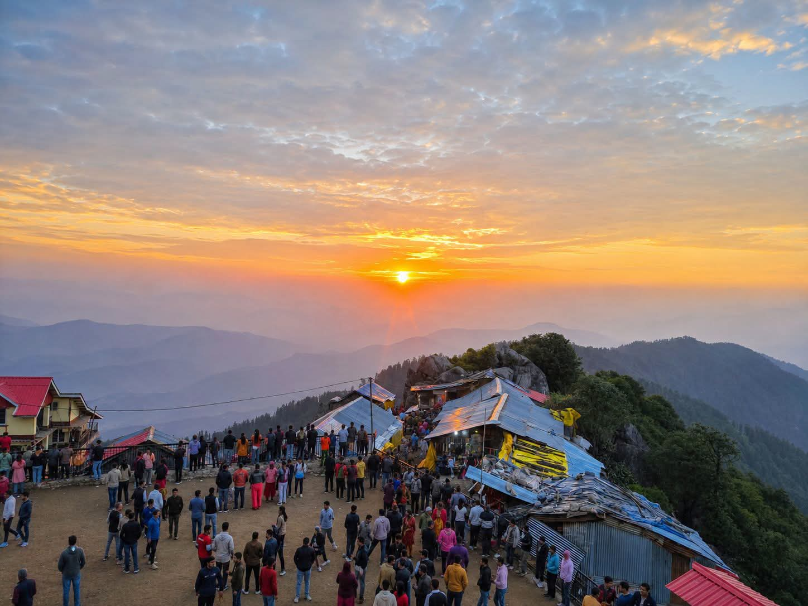
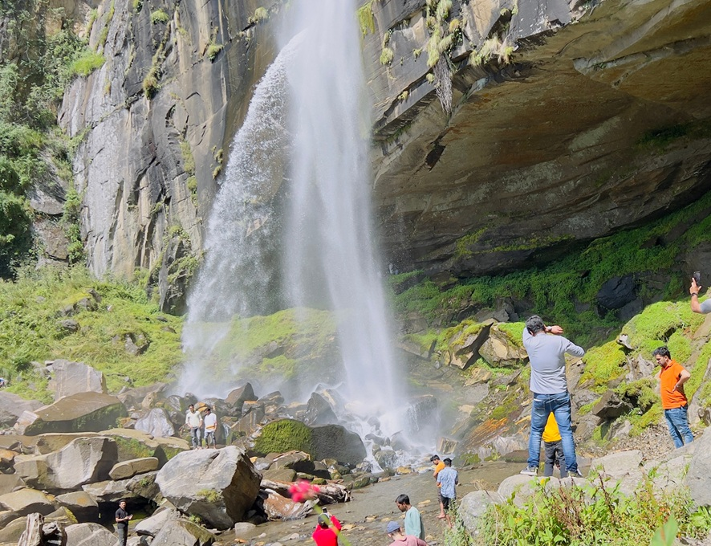
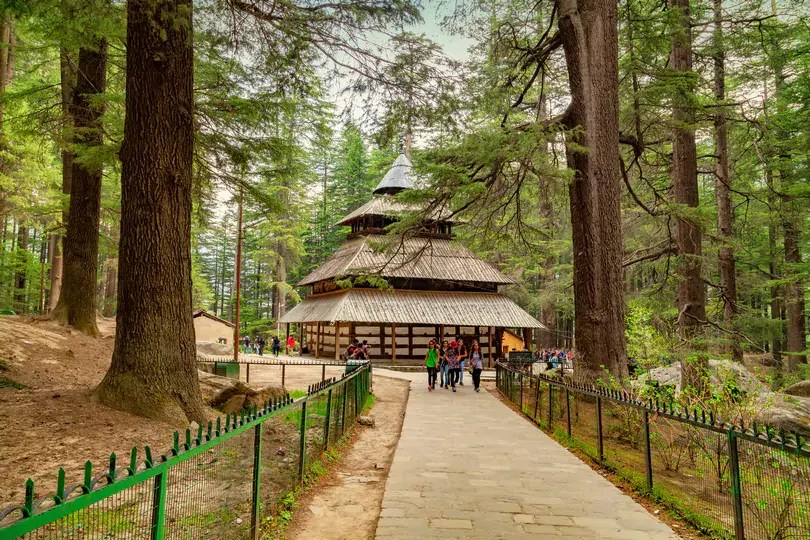
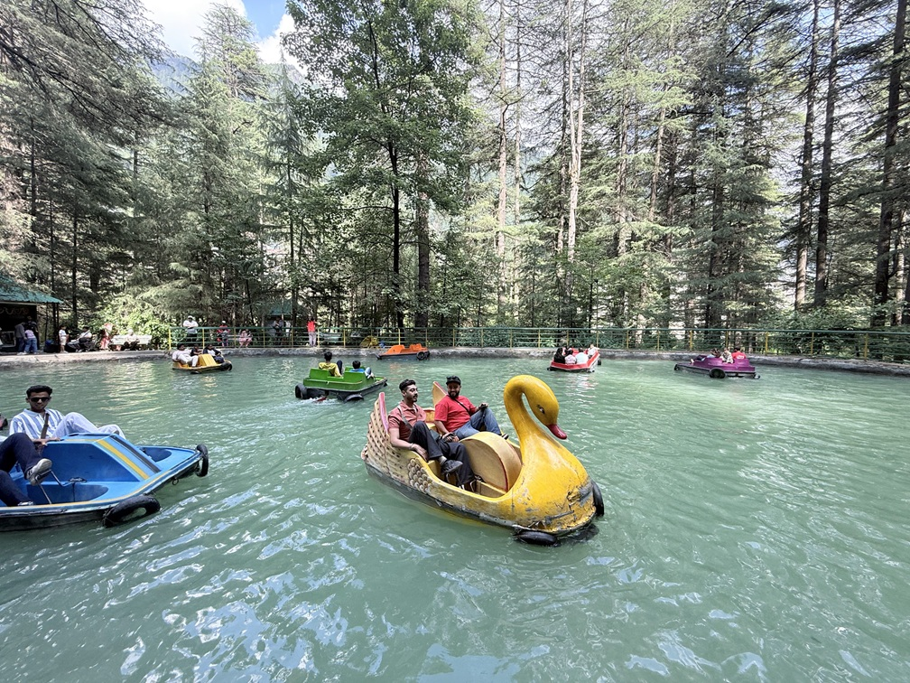

Welcome to Vashisht Village
Located just 3 kilometers from the bustling town of Manali, the Shri Vasishtha Temple offers a serene escape. Perched across the beautiful Beas River, this ancient shrine perfectly blends profound history, stunning wooden architecture, and the deeply relaxing embrace of natural hot springs.
Whether you are seeking spiritual clarity, historical insights, or physical rejuvenation, this sacred space provides a tranquil retreat from the modern world.

History & Legends
The story of a great sage and a tragic loss that turned into spiritual rebirth.
The temple is dedicated to Sage Vashisht, one of the seven great sages (Saptarishis) of Hindu mythology and the revered chief teacher (guru) of Lord Rama.
Legend holds that after facing an immense personal tragedy—the loss of his children—the grieving sage attempted to end his life in a river. However, the river refused to let him drown and untied his bonds. He later meditated at this very spot. The village and the nearby river (which was later named Beas, meaning "to untie") provided him with a renewed sense of peace and liberation.

Kath Kuni Architecture
The shrine stands as a living testament to the traditional Himalayan "Kath Kuni" architectural style. This ingenious, earthquake-resistant building method utilizes alternating layers of interlocking stone and wooden logs—completely without cement or mortar.
- Intricate Carvings: The interior features exquisitely detailed wooden carvings depicting ancient tales.
- Sacred Deity: Houses a beautiful black granite statue of Sage Vashisht.
- Timeless Durability: The structure has withstood the harsh Himalayan winters for centuries.
The Healing Hot Springs
Vashisht Kund
One of the biggest draws to the village is the natural hot water springs. Emerging naturally from the earth, these waters are rich in sulfur and minerals, providing a deeply therapeutic experience against the backdrop of the snowy Himalayas.
Healing Properties
The sulfur-rich water is widely believed to help cure skin diseases and soothe aching, tired muscles after a long trek.
Perfect Temperature
The water naturally maintains a temperature between 40°C to 45°C, making it incredibly comfortable even in freezing winters.
Modern Facilities
The government has constructed separate, safe bathing tanks for men and women, equipped with Turkish-style showers for privacy.
Glimpses of Serenity
Take a visual journey through the ancient architecture, sacred surroundings, and natural beauty of Vashisht Village.





Must Visit Places Nearby
Extend your journey by exploring these popular and sacred destinations located just a short distance from Vashisht Village.

Jogini Falls
~2 km trek from Vashisht
A picturesque waterfall in a remote, tranquil setting. It takes a short, beautiful trek through pine trees and apple orchards to reach this sacred site.
View on Map
Hadimba Devi Temple
~5 km from Vashisht
A unique 16th-century wooden temple dedicated to Hadimba Devi, surrounded by a gorgeous, ancient cedar forest (Dhungiri Van Vihar).
View on Map
Van Vihar Park
~4 km from Vashisht
A lovely, tree-filled riverfront setting perfect for a relaxing stroll. It features towering Deodar trees and offers boating on a small artificial lake.
View on MapPlan Your Visit
Timings
Open every day
7:00 AM to 9:00 PM
Entry Fee
Completely Free for both the temple entry and the hot spring baths.
Best Time
Early mornings are recommended to experience peace and avoid heavy tourist crowds.
What to Bring
Towel and change of clothes for bathing. Please dress modestly out of respect.
Keep this guide handy
Download our one-page digital pamphlet summarizing the temple's history, architecture, and timings for your trip.